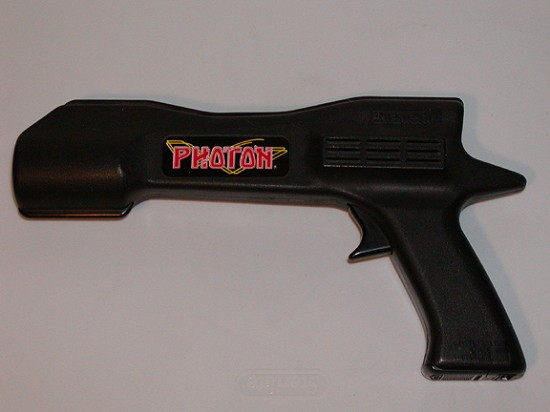
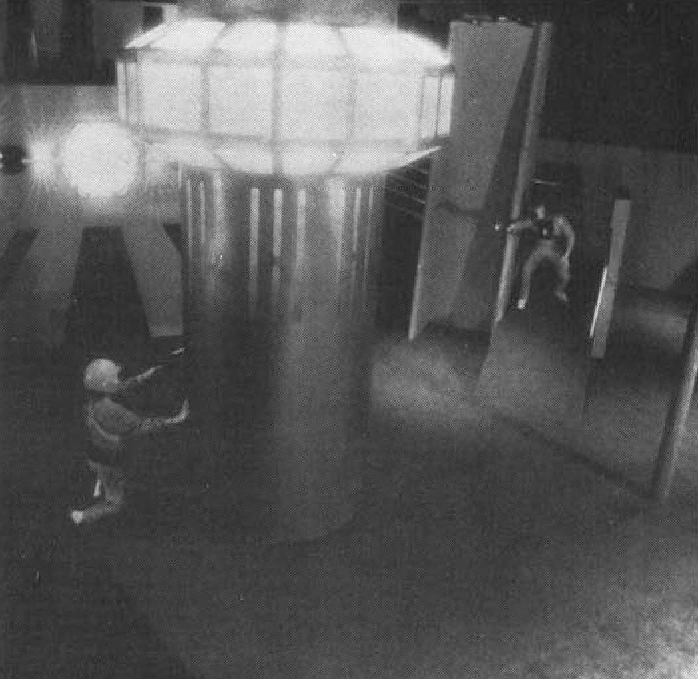
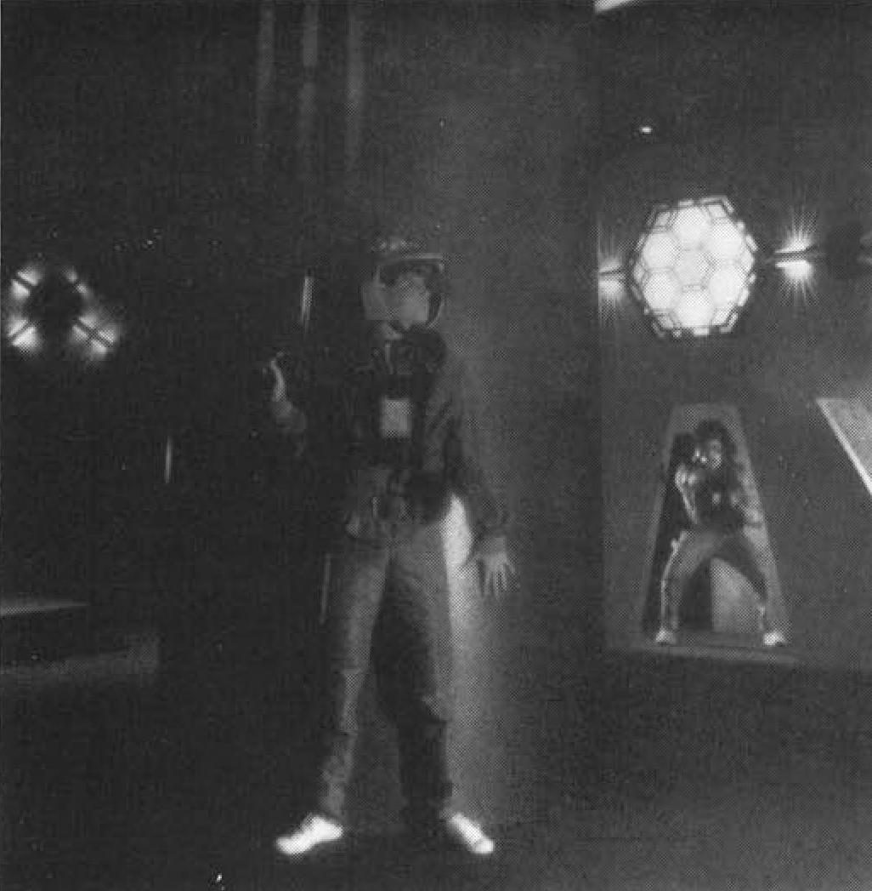
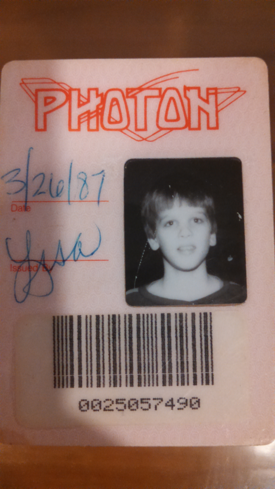

Photon
The Ultimate Game on Planet Earth — fifteen pounds of IR gear, and the whole body as interface

Overview
Photon was the first commercial laser-tag arena, the direct descendant of the US military's MILES laser-training system and the ancestor of every laser-tag venue and console-based body interface that followed. The idea came to founder George Carter III while watching Star Wars in 1977; research and development began in earnest in 1982, and the first Photon center opened in the Dallas suburb of Garland, Texas in March 1984. The original prototype was architected by J.C. Collins; a production engineering team led by Kirk Gay, Dan Sellari, and Roger Hunter of Dallas redesigned it for manufacture. The first franchise opened in Toronto in June 1985.
The experience is the interaction model. Players wore roughly fifteen pounds of battery packs and equipment: an infrared phaser gun (which fired encoded IR beams, not lasers), a sensor vest, and a helmet — the entire body becomes the input and output surface. Arenas featured multiple levels, catwalks, mazes, and an observation deck with token-operated spectator guns. Games lasted six minutes, cued by a Ken Caillat soundtrack with strobes and smoke machines. A computer scored everything: points for shooting opponents and the enemy base, penalties for shooting teammates (which auto-zapped the offender), a limit of three consecutive zaps on the same player, and a weapon that went inert for five to ten seconds after each hit. Live monitors showed scoring under each player's self-chosen handle.
Commercially Photon peaked fast and died hard: by 1987, 70 franchise licenses had been sold and 45 arenas were operating; lack of financing and lost franchise revenue forced the corporation to sell its assets and cease operations in 1989. Home units followed in 1986 under the Entertech brand, and a Takara Famicom game based on Photon appeared in Japan in 1987. The 2021 documentary Let There Be Light chronicled the system's creation and legacy.
Deep dive
Photon is the purest 'body-as-I/O' artifact of its decade. The gun is the output channel (IR beams encoded with a player signature), the vest and helmet are the input channels (photosensors), and the six-minute game loop is a real-time computer-mediated feedback cycle: beam → sensor → scoreboard → strategy. There is no screen to watch — the arena, with its fog, strobes, and catwalks, is the display. Rules were enforced in hardware: the three-consecutive-zap limit forced target variety, and the inert-weapon window after each hit prevented camping. Players countered the machine's rules with bodily workarounds — cocking the helmet back, covering the breastplate with a hand, leaning into walls to block sensors — a lived, physical negotiation with a scoring algorithm.
Long before online gaming, Photon ran a persistent identity system: each player bought a photo ID badge ($10–35) and competed under a self-chosen handle displayed on arena monitors. Leagues and tournaments formed, and the machine tracked each shot, each hit, and each friendly-fire violation in real time — a computer referee, scorekeeper, and matchmaker in one. It is the arcade cabinet's scoring logic turned inside out and worn on the body.
Photon's technology lineage is the US Army's Multiple Integrated Laser Engagement System (MILES), a late-1970s IR laser-and-sensor training system — the same physical principle (beam → detector vest → adjudication) transplanted from combat training to play. Home laser-tag sets (WoW Lazer Tag 1986, Entertech 1986) shrank the arena to the backyard, and the IR signature-encoded beam remains the basis of laser tag to this day. The museum's other body-tracking exhibits (VIDEOPLACE, Mandala, U-Force) are camera-based; Photon is the only one that puts the sensors on the players themselves.
Team & pioneers
- George Carter III. Founder; conceived Photon after watching Star Wars in 1977, began R&D in 1982
- J.C. Collins. Original arena architect; installed the prototype in the Garland, Texas center in early 1984
- Kirk Gay, Dan Sellari, Roger Hunter. Dallas engineering team that redesigned the prototype for production and performance
- Ken Caillat. Composed the dramatic arena soundtrack used to cue six-minute games
Media



Sources
- Wikipedia — Photon: The Ultimate Game on Planet Earth
- International Laser Tag Association — History of Laser Tag (archived)
- The Dallas Morning News (May 7, 2014) — Who knew? Laser tag was invented in Dallas
- Let There Be Light: Photon and the Birth, Life, and Legacy of Laser Tag (2021 documentary)
- Wikipedia — Multiple Integrated Laser Engagement System (MILES)
- Wikimedia Commons images (CC BY-SA 3.0, CC BY-SA 4.0, public domain)